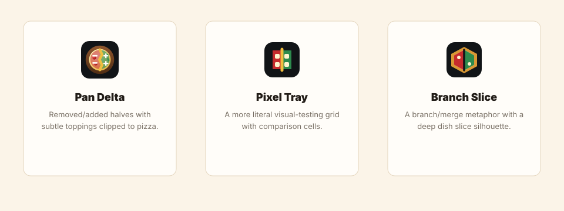

Deep Dish Diff logo review
Production SVG assets for the app mark, favicon, mono mark, and horizontal wordmark.
Primary mark
Small sizes
Monochrome
Concept directions

Production SVG assets for the app mark, favicon, mono mark, and horizontal wordmark.
